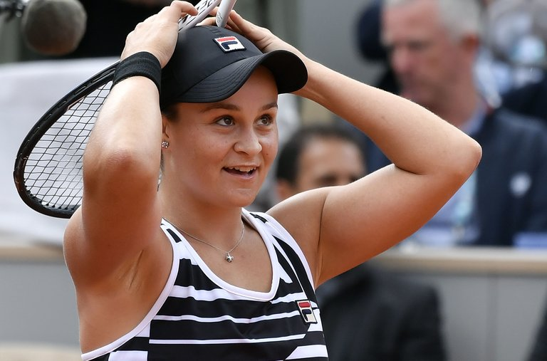

| The Raptors Won Game 4 and Are 1 Win From an N.B.A. Championship |
|
OAKLAND, Calif. — The Golden State Warriors may never play another game at Oracle Arena, the concrete relic they call home, but that is suddenly a secondary concern at best for the N.B.A.’s reigning but reeling champions. |
| Mamiko Higa Holds On to the Lead at the U.S. Women’s Open |
|
CHARLESTON, S.C. — Mamiko Higa of Japan birdied three of her final six holes after a weather delay of nearly two hours, shooting an even-par 71 and maintaining a one-shot lead Friday in the suspended second round of the United States Women’s Open. |
|
BANYANA BANYANA SEEK REDEMPTION IN WORLD CUP AFTER WOEFUL BUILD-UP
After securing a World Cup place for the first time, the team has drawn four matches and lost six while scoring only eight goals and conceding a worrying 24. |
|  |
|
Ashleigh Barty Wins the French Open for Her First Grand Slam Singles Title
Four years ago, the Australian quit tennis and played pro cricket. Now she has a surprising major title and will rise to No. 2 in the rankings. |

|
| Check Out Our Water! |
|
On the App Store Now |
Follow Us On |


|


|